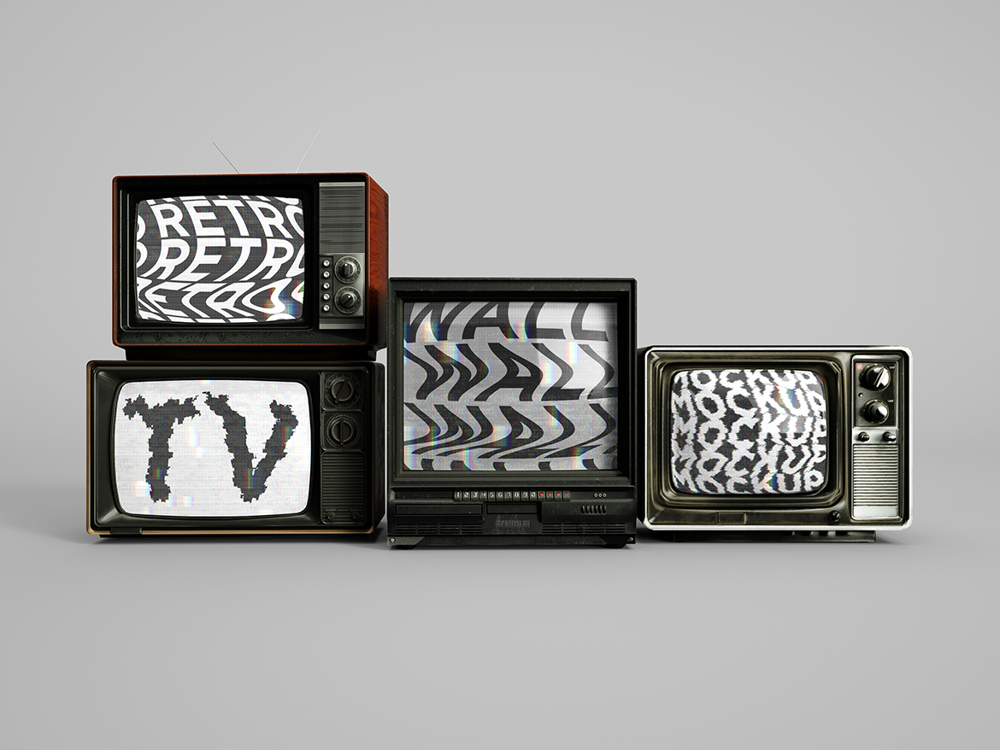
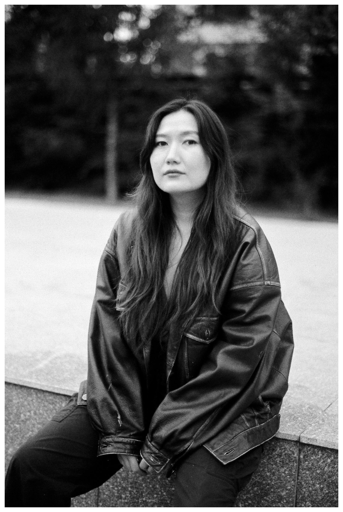

Film
Editor
Selected Works
An archive of films, fragments and edits.

Aidan Serik is a film editor working across fiction, documentary and short-form moving image.
Her work includes feature films, full-length documentaries, short films, branded documentary series and socially engaged cinema. Selected credits include Madina, Joqtau, We Live Here, OT / Fire and DYAD.